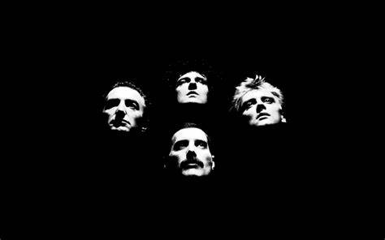

Queen

Integrantes del grupo
Brian May
Freddy Mercury
John Descon
Roger Taylor
Discografia
Grandes éxitos de Queen
Año
Disco
1945
A night at the Opera
1986
A Kind of Magic
1989
The Miracle
"A Kind of MAgic" fue el album más exitoso.
www.queenonline.com